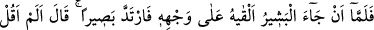
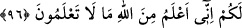

Günahkar diye ben mest olmuşu kınama,
Takdîrin kendi başına ne yazdığını kim bilir?
96. Müjdeci gelip de gömleği yüzüne koyunca derhal görür oldu: “Ben size,
Allah’tan sizin bilmediğiniz şeyleri birilim demedim mi?’ dedi.
“Müjdeci” yani Yahuda “gelip de gömleği” Yâkub’un “yüzüne koyunca” önceki
körlüğünden kurtulup “derhal görür oldu.” Zaaf ve hüzün hâlinden kurtulup kuvvet ve
sevinci yerine geldi.
Hüzün evinde Câmî yer tuttu.
Senden ona müjdeci geldi de kurtuldu
et-Te’vîlâtü’n-Necmiyye’de şöyle denilir: “Müjdeci” kalb Yûsuf’unun huzurundan
ruh Yâkub’una cemâl nurlarının gömleği ile “gelip de gömleği” ruhun “yüzüne koyunca
derhal görür oldu.” Bu ifade, rûhun ilk fıtratı îtibariyle gören bir varlık iken dünyaya
bağlandığı ve onda tasarrufta bulunduğu için körleştiğine, fakat daha sonra kalbden
gelen vârid ile eskisi gibi görmeye başladığına işaret vardır.
Müjdeci geldi gözleri aydınlatan haber ile,
Nefisler şifâ buldu, maksadlarına nâil oldu hepsi de
Öyle paylaşmış ki insanlar aralarında sevinci
En fazla pay alan ben olmuşum bu taksimde.
Âyette işaret vardır ki kalb işin başında kemâle ermek için ruha muhtaçtır. Ancak ne
zaman ki kalb iki parmağı arasından Hakk’ın feyezânını kabul edebilecek kemâle ve
elverişliliğe erer, nihâyette Allah’a yakınlık (kurbet) Mısırı’nda hilâfet hükümranlığına
nâil olur. İşte o zaman Hakk’ın nurlarıyla pürnûr olduğu için bu sefer ruh kalbe muhtaç
hâle gelir. Çünkü kalb ilâhî nûrunun ateşini kabul konusunda lamba mesâbesinde, ruh ise
lambanın yağı mesabesindedir.
Başlangıçta lamba yanmak için yağa muhtaçtır. Sonunda yağ lamba vasıtasıyla
yanabilmek için ona ve ona koyulmaya muhtaçtır. Çünkü lamba ve aksâmı olmadan yağ
yanmaz. İyi anla.
“Ben size Allah’tan sizin bilmediğiniz şeyleri bilirim demedim mi?” dedi.” Yâni, ey
oğullarım! Sizi Mısır’a gönderirken etrafı iyice araştırmanızı söyleyip emretmedim mi?
Allah’ın rahmetinden ümid kesmenizi yasaklamadım mı? Yûsuf’un hayatta olduğu ve
sizin için bir çıkış kapısı açacağı gibi hususlarda sizin bilmediğiniz şeyleri, Allah
tarafından bilirim, demedim mi?